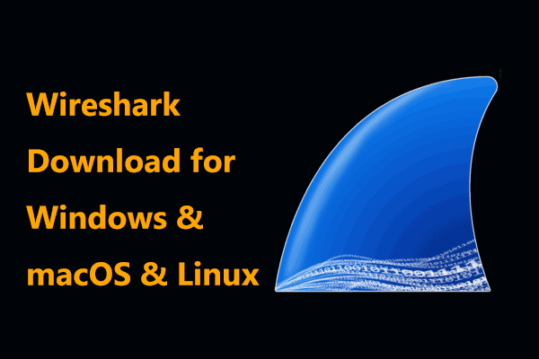

<!DOCTYPE html>
<!--[if lt IE 7]>      <html class="no-js lt-ie9 lt-ie8 lt-ie7"> <![endif]-->
<!--[if IE 7]>         <html class="no-js lt-ie9 lt-ie8"> <![endif]-->
<!--[if IE 8]>         <html class="no-js lt-ie9"> <![endif]-->
<!--[if gt IE 8]>      <html class="no-js"> <!--<![endif]-->
<html>
    <head>
        <meta charset="utf-8">
        <meta http-equiv="X-UA-Compatible" content="IE=edge">
        <title> Top best Tools Linux? </title>
        <meta name="description" content="cyber scurity">
        <meta name="viewport" content="width=device-width, initial-scale=1">
        <link rel="stylesheet" href="kalilinux/kalilinux.css">
        <link rel="icon" type="image/x-icon" href="img/icons.ico">
    </head>
    <body>
          <var id="header1">

           

           <a style="font-size: 2em ;" id="header"  href="index.html">HomePage</a>
           <br><br><br><br>
         </var>

        <br>
          <var id="Metasploit1">
           
            <a  href="#Wireshark-Download">1. How to Install Wireshark and Download</a>
            <p>
          
            </p>
        </var> 
        <var id="Metasploit2" >
            <a  href="#Metasloit1"> 2. How to Install Metasploit and Download</a>
            <p>
           
            </p>
        </var>
        <var id="Metasploit3"> 

            <a  href="#nmap2">3. How to Install Nmap and Download</a>
            <p>

            </p>
               
        </var>
        <var id="Metasploit4"> 

            <a href="#john4">4. How to Install John the Ripper and Download</a>
            <p>
                
            </p>
        </var>
        <var id="Metasploit5"> 

            <a href="#aircrack4">5. How to Install Aircrack-ng and Download</a>
        </var>

        
        <var class="wireshark">
            <h2>&nbsp;&nbsp;&nbsp;1.&nbsp;&nbsp; Tools  Wireshark</h2><b>


            </b>
            <h2> &nbsp;&nbsp;&nbsp; 1. &nbsp; How do hackers use Wireshark?</h2>
            <P style="font-size: 1.3em;">&nbsp;&nbsp;&nbsp;&nbsp;&nbsp;&nbsp;&nbsp;&nbsp;&nbsp;&nbsp;&nbsp;&nbsp;&nbsp;Footprinting and reconnaissance: As a precursor to an active attack, hackers use Wireshark to capture unencrypted traffic in order to gather as much information about the target as possible.</P><br>
             
            
    
            <h2>&nbsp;&nbsp;2.&nbsp;&nbsp; Is it legal to use Wireshark ?</h2>
           
            <p style="font-size: 1.3em;">&nbsp;&nbsp;&nbsp;&nbsp;&nbsp;&nbsp;&nbsp;&nbsp;&nbsp;&nbsp;In conclusion, the use of Wireshark is legal when used responsibly and with proper authorization. It is a powerful tool for network analysis and troubleshooting, but it is essential to respect privacy laws and obtain consent before intercepting and analyzing network traffic.</p><b></b>
            <h2>&nbsp;&nbsp;3.&nbsp;&nbsp;Is Wireshark good or bad?</h2> 
            <p style="font-size: 1.3em;"> &nbsp;&nbsp;&nbsp;&nbsp;&nbsp;&nbsp;&nbsp;&nbsp;&nbsp;&nbsp; Many users recommend using the free version of Wireshark as it is considered a great tool for networking systems and packet analysis. Users appreciate its stability and open-source nature.</p><b>
        
            <h2>&nbsp;&nbsp;&nbsp;&nbsp;Wireshark Download Link :</h2>
            <b></b>
            <div>
            <p>


            </p>

           
                  <a class="Download" href="https://www.wireshark.org/download.html">Download Now</a>
            
            </div>

            <var>
                <h2 id="Metasloit1">&nbsp;&nbsp;&nbsp;2.&nbsp;&nbsp; Tools Metasploit </h2><b>
                    <h2 >&nbsp;&nbsp;&nbsp;&nbsp;1.&nbsp;&nbsp;What is Metasploit used for?</h2>
                    <p style="font-size: 1.3em;">&nbsp;&nbsp;&nbsp;&nbsp;&nbsp;&nbsp;&nbsp;&nbsp;&nbsp;&nbsp;&nbsp;&nbsp;&nbsp;&nbsp;&nbsp;&nbsp;&nbsp;&nbsp;What Is Metasploit, and How Does It Work? Metasploit is the world's leading open-source penetrating framework used by security engineers as a penetration testing system and a development platform that allows to create security tools and exploits. The framework makes hacking simple for both attackers and defenders.</p><b></b>
                     
                    
                    <h2>&nbsp;&nbsp;&nbsp;&nbsp;2.&nbsp;&nbsp;Do real hackers use Metasploit?</h2>

                    

                    <p style="font-size: 1.3em;">&nbsp;&nbsp;&nbsp;&nbsp;&nbsp;&nbsp;&nbsp;&nbsp;&nbsp;&nbsp;&nbsp;&nbsp;
                        Metasploit – Best Cyber Security Pentesting Tool | DIESEC
                        Information gathering is one of the main use cases of Metasploit. Both actual and ethical hackers can use this tool to obtain access and information about their targets by using a variety of IT recon techniques, such as service identification, SNMP sweeping, port scanning, or Microsoft SQL hunting.</p><b></b>
                    <h2>&nbsp;&nbsp;&nbsp;&nbsp;3.&nbsp;&nbsp;What tool is Metasploit?</h2> 

                    <p style="font-size: 1.3em;">&nbsp;&nbsp;&nbsp;&nbsp;&nbsp;&nbsp;&nbsp;&nbsp;&nbsp;&nbsp;&nbsp;&nbsp;The Metasploit Framework is a Ruby-based, modular penetration testing platform that enables you to write, test, and execute exploit code. The Metasploit Framework contains a suite of tools that you can use to test security vulnerabilities, enumerate networks, execute attacks, and evade detection.</p><b></b>
                    <h2>&nbsp;&nbsp;&nbsp;&nbsp;4.&nbsp;&nbspHow do hackers use Metasploit?</h2>

                    
                    <p style="font-size: 1.3em;">&nbsp;&nbsp;&nbsp;&nbsp;&nbsp;&nbsp;&nbsp;&nbsp;&nbsp;&nbsp;&nbsp;&nbsp;
                        Metasploit Payloads <b>

                    </b>
                        
                     Payload, in simple terms, are simple scripts that the hackers utilize to interact with a hacked system. Using payloads, they can transfer data to a victim system. Singles − Singles are very small and designed to create some kind of communication, then move to the next stage.</p><b></b>

                    

                    <h2>&nbsp;&nbsp;&nbsp;&nbsp;What Is Metasploit? How to Install Metasploit on Linux?</h2>

                    <p>&nbsp;&nbsp;&nbsp;&nbsp;&nbsp;&nbsp;&nbsp;&nbsp;Metasploit is an open-source penetration testing framework used to find and exploit vulnerabilities in computer systems, networks, and applications. It allows security professionals to simulate real-world attacks and test the security posture of their organization.</p>

                    <p>&nbsp;&nbsp;&nbsp;&nbsp;&nbsp;&nbsp;&nbsp;&nbsp;Metasploit provides a set of tools, modules, and exploits that can be used to automate the process of scanning, testing, and exploiting vulnerabilities in a target system. It also provides a graphical user interface (GUI) and a command-line interface (CLI) to interact with the framework.</p>
                         
                    <h2 id="howtoinstall" style="font-size: 3em;">&nbsp;&nbsp;&nbsp;&nbsp;How to Install  Metasploit</h2>  

                    <p>&nbsp;&nbsp;&nbsp;&nbsp;&nbsp;&nbsp;&nbsp;&nbsp; 1.  Open a terminal window on Linux?
                    <p>&nbsp;&nbsp;&nbsp;&nbsp;&nbsp;&nbsp;&nbsp;&nbsp;2.  Install the necessary dependencies by running the following command:
                    <p>&nbsp;&nbsp;&nbsp;&nbsp;&nbsp;&nbsp;&nbsp;&nbsp;&nbsp;&nbsp;&nbsp;&nbsp;&nbsp;&nbsp;&nbsp;&nbsp; sudo apt-get install build-essential zlib1g zlib1g-dev libxml2 libxml2-dev libxslt-dev locate libreadline6-dev libcurl4-openssl-dev git-core autoconf curl postgresql postgresql-contrib libpq-dev libapr1 libaprutil1 libsvn1 libpcap-dev
                    <p>&nbsp;&nbsp;&nbsp;&nbsp;&nbsp;&nbsp;&nbsp;&nbsp;  3.  Download the Metasploit framework from the official website using git:
                    <p>&nbsp;&nbsp;&nbsp;&nbsp;&nbsp;&nbsp;&nbsp;&nbsp;&nbsp;&nbsp;&nbsp;&nbsp;&nbsp;&nbsp;&nbsp;&nbsp; git clone https://github.com/rapid7/metasploit-framework.git
                    <p>&nbsp;&nbsp;&nbsp;&nbsp;&nbsp;&nbsp;&nbsp;&nbsp;4.  Change into the Metasploit directory:
                    <p>&nbsp;&nbsp;&nbsp;&nbsp;&nbsp;&nbsp;&nbsp;&nbsp;&nbsp;&nbsp;&nbsp;&nbsp;&nbsp;&nbsp;&nbsp;&nbsp; cd metasploit-framework
                    <p>&nbsp;&nbsp;&nbsp;&nbsp;&nbsp;&nbsp;&nbsp;&nbsp; 5.  Run the following command to install Metasploit:
                    <p>&nbsp;&nbsp;&nbsp;&nbsp;&nbsp;&nbsp;&nbsp;&nbsp;&nbsp;&nbsp;&nbsp;&nbsp;&nbsp;&nbsp;&nbsp;&nbsp;sudo bash -c 'for MSF in $(ls msf*); do ln -s /usr/local/src/metasploit-framework/$MSF /usr/local/bin/$MSF;done'
                    <p>&nbsp;&nbsp;&nbsp;&nbsp;&nbsp;&nbsp;&nbsp;&nbsp; 6.  Update the Metasploit database:
                    <p>&nbsp;&nbsp;&nbsp;&nbsp;&nbsp;&nbsp;&nbsp;&nbsp;&nbsp;&nbsp;&nbsp;&nbsp;&nbsp;&nbsp;&nbsp;&nbsp;sudo service postgresql start
                    <p>&nbsp;&nbsp;&nbsp;&nbsp;&nbsp;&nbsp;&nbsp;&nbsp;&nbsp;&nbsp;&nbsp;&nbsp;&nbsp;&nbsp;&nbsp;&nbsp;sudo msfdb init
                    <p>&nbsp;&nbsp;&nbsp;&nbsp;&nbsp;&nbsp;&nbsp;&nbsp; 7.  Verify that Metasploit is installed correctly by running the following command:
                    <p>&nbsp;&nbsp;&nbsp;&nbsp;&nbsp;&nbsp;&nbsp;&nbsp;&nbsp;&nbsp;&nbsp;&nbsp;&nbsp;&nbsp;&nbsp;&nbsp;msfconsole
                       


                </var>

        
        </var>

        <var style="font-size: 1.3em;">
             <h2>&nbsp;&nbsp;&nbsp;3.&nbsp;&nbsp; Tools  Nmapk</h2><b></b>
             <h2>&nbsp;&nbsp;&nbsp;&nbsp;1. &nbsp;&nbsp;   What is Nmap used for?</h2>
             
             <p >&nbsp;&nbsp;&nbsp;&nbsp;&nbsp;&nbsp;&nbsp;&nbsp;What is Nmap? Nmap is a network scanning tool—an open source Linux command-line tool—used for network exploration, host discovery, and security auditing. Gordon Lyon (pseudonym Fyodor Vaskovich) created it to help map an entire network easily and find its open ports and <b></b></p>
             <h2>&nbsp;&nbsp;&nbsp;&nbsp;2. &nbsp;&nbsp;Is Nmap illegal in India?        </h2>
              <p>&nbsp;&nbsp;&nbsp;&nbsp;&nbsp;&nbsp;&nbsp;&nbsp;When used properly, Nmap helps protect your network from invaders. But when used improperly, Nmap can (in rare cases) get you sued, fired, expelled, jailed, or banned by your ISP.<b></b></p>
              
              <h2>&nbsp;&nbsp;&nbsp;3.&nbsp;&nbsp; Why is Nmap a good tool? </h2>
              <p>&nbsp;&nbsp;&nbsp;&nbsp;&nbsp;&nbsp;&nbsp;&nbsp;Users find Nmap to be a helpful tool with an easy interface for scanning networks, making it the best free networking scanner available. It offers easy commands and scripts for performing scans, allowing users to check services running on a network and detect vulnerabilities.<b></b></p>
              <h2>&nbsp;&nbsp;&nbsp;4.&nbsp;&nbsp; What is the full form of Nmap? </h2>
              
              <p>&nbsp;&nbsp;&nbsp;&nbsp;&nbsp;&nbsp;&nbsp;&nbsp;Nmap (Network Mapper) is a network scanner created by Gordon Lyon (also known by his pseudonym Fyodor Vaskovich). Nmap is used to discover hosts and services on a computer network by sending packets and analyzing the responses. Nmap Security Scanner. Nmap scan results.<b></b></p>
              <h2>&nbsp;&nbsp;&nbsp;5.&nbsp;&nbsp;  Can hackers use Nmap? </h2>
              <p>&nbsp;&nbsp;&nbsp;&nbsp;&nbsp;&nbsp;&nbsp;&nbsp;However, hackers can also use Nmap to access uncontrolled ports on a system. They can run Nmap on a targeted approach, identify vulnerabilities, and exploit them. But Nmap is not only used by hackers - IT security companies also use it to simulate potential attacks that a system may face. <b></b></p>
              
              <h2>&nbsp;&nbsp;&nbsp;&nbsp;Nmap Download Link :</h2>
              <a class="nmapDownload" href="https://nmap.org/download">Download Now</a>


        </var>


        <var style="font-size: 1.3em;">
            <h2>&nbsp;&nbsp;&nbsp;4.&nbsp;&nbsp; Tools  John the Ripper</h2><b></b>
            
            <h2>&nbsp;&nbsp;&nbsp;&nbsp;1. &nbsp;&nbsp; What is John the Ripper and how does it work? </h2>
            <p>&nbsp;&nbsp;&nbsp;&nbsp;&nbsp;&nbsp;&nbsp;&nbsp;&nbsp;&nbsp;&nbsp;&nbsp;&nbsp;&nbsp;&nbsp;&nbsp; John the Ripper (JTR) is a free, open-source software tool used by hackers, both ethical and otherwise, for password cracking. The software is typically used in a UNIV/Linux and Mac OS X environment where it can detect weak passwords. John the Ripper jumbo supports many cipher and hash types.
            <h2>&nbsp;&nbsp;&nbsp;&nbsp;2. &nbsp;&nbsp; How does John the Ripper John guess passwords?</h2><b></b>
            
            <p>&nbsp;&nbsp;&nbsp;&nbsp;&nbsp;&nbsp;&nbsp;&nbsp;&nbsp;&nbsp;&nbsp;&nbsp;&nbsp;&nbsp;&nbsp;&nbsp;How does John the Ripper (John) guess passwords? John hashes the guessed password and compares it to the list of password hashes to be cracked. If the hashes match, John remembers the plaintext password associated with it and can return that to the attacker.
            <h2>&nbsp;&nbsp;&nbsp;&nbsp;3. &nbsp;&nbsp; Why is John the Ripper taking so long?</h2><b></b>
            
            <p>&nbsp;&nbsp;&nbsp;&nbsp;&nbsp;&nbsp;&nbsp;&nbsp;&nbsp;&nbsp;&nbsp;&nbsp;&nbsp;&nbsp;&nbsp;&nbsp; Because if your password is in the dictionary provided by John The Ripper then it will crack the password very quickly. But if the password is not in the dictionary it will do brute force against the password trying all possible combinations. The brute force timing is proportional to complexity of your password.
            <h2>&nbsp;&nbsp;&nbsp;&nbsp;4. &nbsp;&nbsp;Where does John save cracked passwords?</h2><b></b>
            <p>&nbsp;&nbsp;&nbsp;&nbsp;&nbsp;&nbsp;&nbsp;&nbsp;&nbsp;&nbsp;&nbsp;&nbsp;&nbsp;&nbsp;&nbsp;&nbsp; Cracked passwords will be printed to the terminal and saved in the file called $JOHN/john. pot (in the documentation and in the configuration file for John, "$JOHN" refers to John's "home directory"; which directory it really is depends on how you installed John).
            
            <h2>&nbsp;&nbsp;&nbsp;&nbsp;John the Ripper  Download Link :</h2>
            <a class="john5" href="https://www.openwall.com/john/">Download Now</a>
            </var>

            <var style="font-size: 1.3em;">
                <h2>&nbsp;&nbsp;&nbsp;5.&nbsp;&nbsp; Tools  Aircrack-ng</h2><b></b>
                
                <h2>&nbsp;&nbsp;&nbsp;&nbsp;1. &nbsp;&nbsp;What is aircrack used for? </h2>
                <p>&nbsp;&nbsp;&nbsp;&nbsp;&nbsp;&nbsp;&nbsp;&nbsp;&nbsp;&nbsp;&nbsp;&nbsp;&nbsp;&nbsp;&nbsp;&nbsp;Aircrack-ng a suite of tools to assess WiFi network security including: monitoring, attacking, testing, and cracking. The suite tests the strength of passwords used for wireless networks. All tools are command line, which allows for heavy scripting.
                 
                <h2>&nbsp;&nbsp;&nbsp;&nbsp;2. &nbsp;&nbsp; Can I run aircrack-ng on Windows? </h2>
                <p>&nbsp;&nbsp;&nbsp;&nbsp;&nbsp;&nbsp;&nbsp;&nbsp;&nbsp;&nbsp;&nbsp;&nbsp;&nbsp;&nbsp;&nbsp;&nbsp;The Windows version of the Aircrack-ng suite does not have an install program. You must manually install (unzipping archive) the software. Here are the steps to follow for Windows: Download the latest version of the Aircrack-ng suite for Windows to your computer. 
                
                <h2>&nbsp;&nbsp;&nbsp;&nbsp;3. &nbsp;&nbsp; Why is it called aircrack-ng? </h2>
                <p>&nbsp;&nbsp;&nbsp;&nbsp;&nbsp;&nbsp;&nbsp;&nbsp;&nbsp;&nbsp;&nbsp;&nbsp;&nbsp;&nbsp;&nbsp;&nbsp;Aircrack-ng was based on an earlier utility called Aircrack. As typical for many products, the “ng” in the name stands for next generation. Aircrack-ng is one of the penetration testing tools that are built into Kali Linux.
                <h2>&nbsp;&nbsp;&nbsp;&nbsp;4. &nbsp;&nbsp; Who created aircrack? </h2>
                <p>&nbsp;&nbsp;&nbsp;&nbsp;&nbsp;&nbsp;&nbsp;&nbsp;&nbsp;&nbsp;&nbsp;&nbsp;&nbsp;&nbsp;&nbsp;&nbsp;Aircrack was originally developed by French security researcher Christophe Devine, its main goal was to recover 802.11 wireless networks WEP keys using an implementation of the Fluhrer, Mantin and Shamir (FMS) attack alongside the ones shared by a hacker named KoreK.
                
                <h2>&nbsp;&nbsp;&nbsp;&nbsp;Aircrack-ng  Download Link :</h2>
                <a class="air" href="https://github.com/aircrack-ng/aircrack-ng"> Download Now</a>

            </var>
                <var class="aircrack5">
                 <p>
                       
                    &#20;
                    &#20;
                    &#20; 
                </p>
            
                <p>

                </p>
        
             </var>
       
       
       
        <script>
            window.onscroll = function() {myFunction()};
            
            var header = document.getElementById("header1");
            var sticky = header.offsetTop;
            
            function myFunction() {
              if (window.pageYOffset >= sticky) {
                header.classList.add("sticky")
              } else {
                header.classList.remove("sticky");
              }
            }
         </script>
           
         


      
        
       
    </body>
</html>